Buenas tardes. Antes que nada, queríamos agradecerles por venir hoy y compartir con nosotros esta jornada. Somos el equipo de BandoneAR: Brenda, Maxi, Antonio, Leo y Franco, que es quien les habla. Antes de presentar el proyecto nos gustaría dar un poco de contexto sobre el instrumento, el tango y la cultura rioplatense. ---
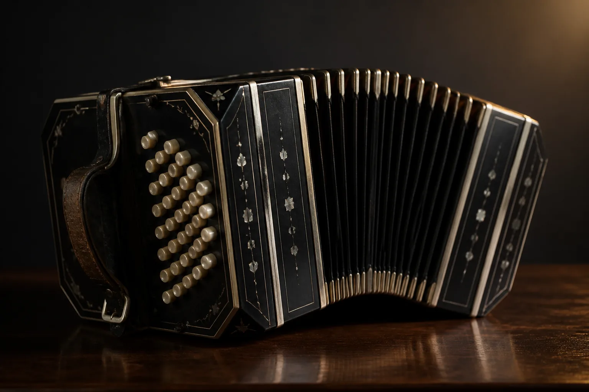
BandoneAR
Un instrumento digital y accesible, para aprender.
Brenda · Maxi · Antonio · Leo · Franco
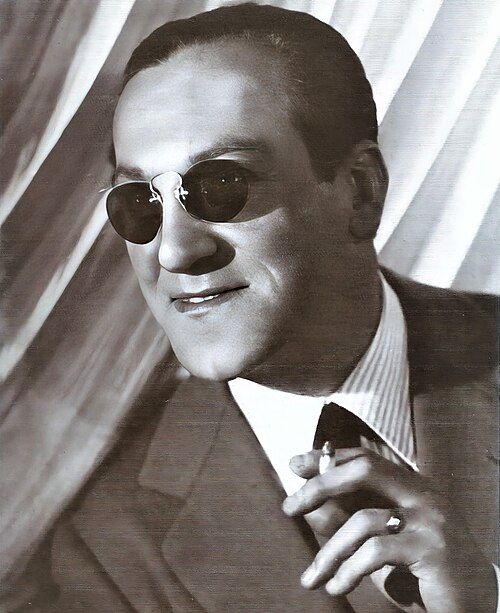
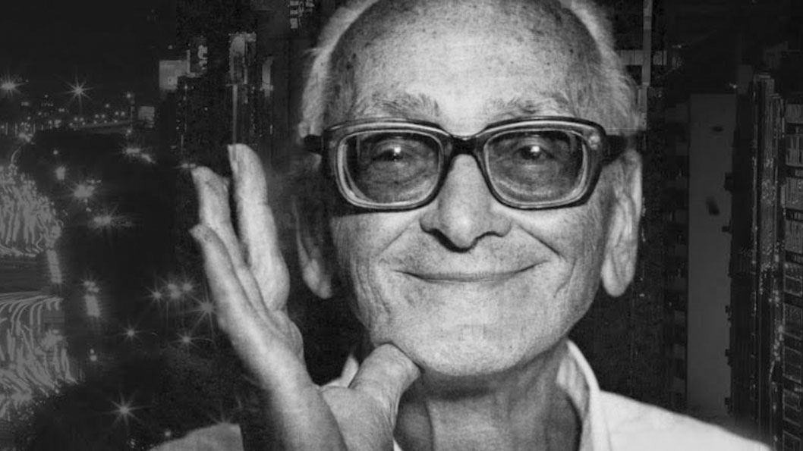
El foco de nuestro proyecto es el bandoneón. Para los que no lo conocen, es un instrumento de viento libre, de la familia del acordeón, con dos teclados y un fuelle. Al apretar una tecla se libera un mecanismo interno y, al mover el fuelle, el aire pasa por unas lengüetas metálicas y las hace sonar. Es muy difícil de aprender. La distribución de las notas no sigue una lógica simple y los dos lados son distintos entre sí. Y no solo eso: es bisonoro, cada botón da una nota al abrir el fuelle y otra distinta al cerrarlo. Así que para tocarlo hay que memorizar cuatro teclados. Nació en Alemania a mediados del siglo XIX, cuando el músico y comerciante Heinrich Band empezó a vender una versión mejorada de la concertina. Buscaba un órgano de iglesia más barato, y de ahí le viene el sonido. Llegó al Río de la Plata en barco hacia 1870 y, como decía Piazzolla, algún marinero lo empeñó por una botella. Así empezó a integrarse en nuestra cultura. ---
¿Qué es el bandoneón?
- Instrumento de viento libre, familia del acordeón
- Dos teclados y un fuelle
- Los dos lados son distintos entre sí
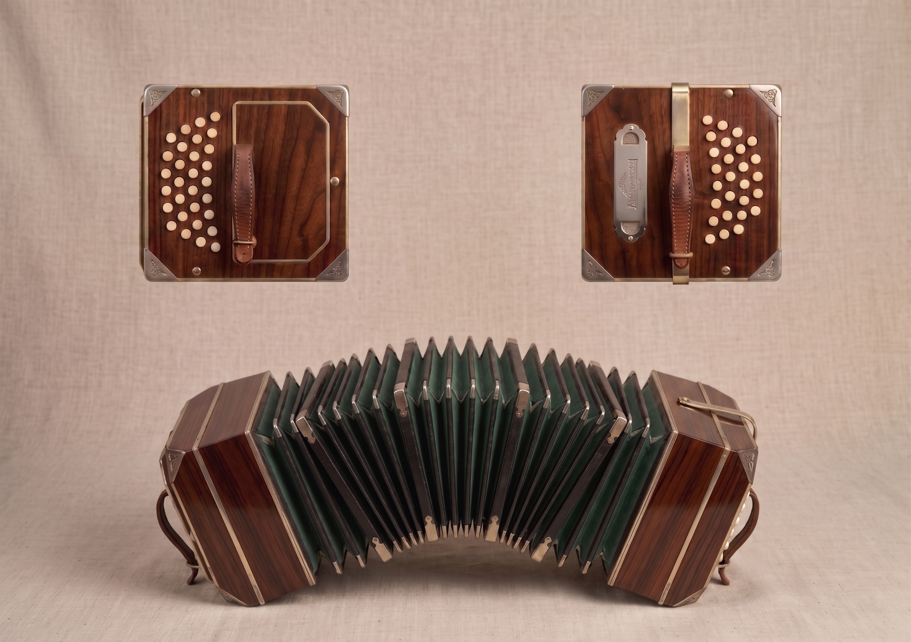
- 1846 · Alemania. Heinrich Band
- Un órgano de iglesia más barato
- 1870 · Río de la Plata. Llega en barco
- El alma del tango
La formación original de las orquestas de tango era flauta, violín y guitarra, un sonido rápido y brillante. Cuando llegó el bandoneón no lo aceptaron enseguida, porque su fraseo ligado y sus graves no parecían pertenecer ahí. Pero, a diferencia del resto de los instrumentos, no arrastraba ninguna tradición: era un papel en blanco, sin maestros ni métodos, había que inventarlo todo. Y terminó dándole al tango justo lo que le faltaba, ese sonido grave y melancólico por el que hoy lo reconocemos. Se fue imponiendo de la mano de Juan Maglio "Pacho", que empezó a grabar en 1912 con tanto éxito que "un Pacho" pasó a significar "una grabación". Poco antes, en 1910, Vicente Greco había dirigido la primera formación grabada dedicada solo al tango con bandoneón, y para nombrarla se inventó el término Orquesta Típica Criolla, que con el tiempo quedó simplemente en orquesta típica. Y Eduardo Arolas, uno de los bandoneonistas más importantes de la historia del tango, terminó de definir con Pacho la técnica del ligado. ---
La voz del tango.
Al principio no lo aceptaron. Después le dio al tango lo que le faltaba.
- Antes: flauta, violín y guitarra
- Un papel en blanco: sin maestros ni métodos
- Pacho, 1912: graba y lo populariza
- Greco, 1910: nace la orquesta típica
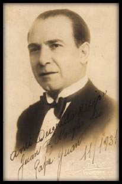
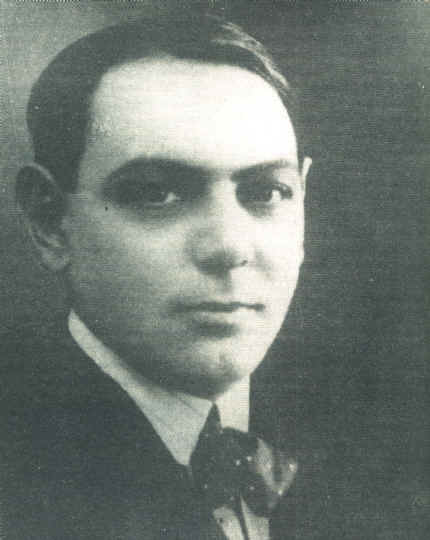
Una vez establecido en la orquesta típica, el bandoneón se convirtió en el sonido del tango, el instrumento que ya no podía faltar. Aníbal Troilo, el bandoneón mayor de Buenos Aires, compuso muchísimos tangos y terminó de volverlo protagonista. A esa altura el género ya estaba plenamente establecido. Para los rioplatenses el tango era la música del arrabal: del esfuerzo, del sufrimiento, de la muerte y del amor. Mezclado con el baile inundó las calles de Buenos Aires, y de ahí salió al mundo, primero con la voz de Carlos Gardel y después con Ástor Piazzolla. El tango recorrió el mundo entero, pero el instrumento que le da su identidad es hoy cada vez más difícil de conseguir. ---
Gardel, Troilo, Piazzolla.
El tango se hizo universal. Su instrumento, cada vez más exclusivo.
- Troilo, el bandoneón mayor de Buenos Aires
- La música del arrabal
- Gardel lo llevó al mundo
- Piazzolla lo reinventó
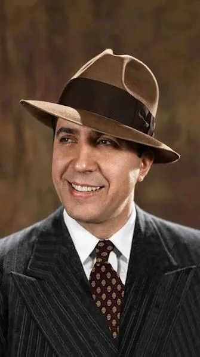
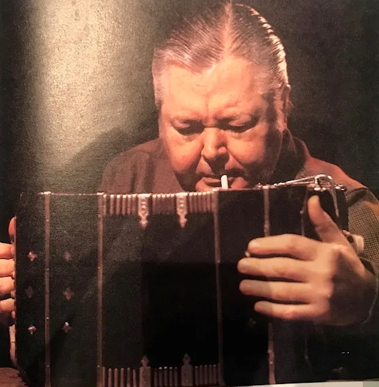
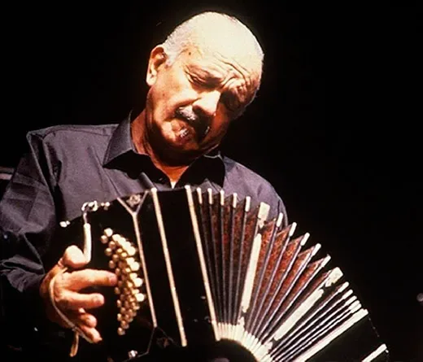
Muchas gracias, Franco, por el contexto. Ahora me gustaría explicar dónde estamos hoy y cuál es la situación actual del bandoneón como instrumento. El bandoneón es hoy un instrumento de nicho. Por un lado está el costo: alcanza fácilmente los miles de dólares. Por otro, la disponibilidad: ya casi no se fabrica, se hace de manera completamente artesanal y solo por algunos luthiers especializados, o hay que conseguir un usado restaurado. Como el bandoneón de Franco, que les estamos mostrando. Tiene más de cien años y, como todos los bandoneones de esa época, es patrimonio cultural. Solo por si a alguno se le ocurre robarlo, tengan en cuenta que lo va a venir a buscar la Interpol. Y hay una tercera barrera, menos visible: el aprendizaje. Hay muy pocos profesores especializados, y sin un instrumento propio para practicar el proceso no se sostiene. Como todos sabemos, el tango es una de las cartas de presentación de la cultura rioplatense en el mundo, una de las principales atracciones de nuestro país para los extranjeros. Y sin embargo hoy tocarlo es un privilegio. ---
Hoy tocar es un privilegio.
No se fabrican. Solo artesanales de luthier, o un usado restaurado.
Miles de dólares. Fuera del alcance de quien quiere empezar.
Pocos profesores, y sin instrumento propio no se sostiene.
Por todo esto creemos que la poca difusión y popularidad que hoy tienen el tango y sobre todo el bandoneón, que como explicó mi compañero es uno de los pilares de nuestra identidad cultural, no se deben a una falta de interés ni de gusto, sino a un costo de entrada altísimo y a la ausencia de alternativas viables para empezar a estudiar, escuchar y componer tango. Nuestro cliente es esa persona: alguien que alguna vez soñó con tocar el bandoneón y se frenó al ver el precio, o al no saber por dónde empezar. Porque uno no elige al azar qué instrumento va a tocar. Hace falta experimentar, probarlo, que el gusto madure con la experiencia. Me gustaría darles un ejemplo muy claro. ¿Cuántos de ustedes vieron o escucharon en vivo un piano de cola alguna vez en su vida? (esperar) Ahora, ¿cuántos tocaron alguna vez un teclado Casio? Si hoy tenemos acceso a toda la cultura musical del piano, y a todo lo que evolucionó a partir de ella, es porque existe una puerta de entrada barata y fácil de conseguir. Eso es lo que al bandoneón le falta, y es lo que venimos a construir. ---
- El interés existe. Lo que falta es por dónde empezar
- Nadie elige al azar qué instrumento tocar: hay que poder probarlo
- La cultura del piano creció porque existe el teclado barato
- El bandoneón no tiene esa puerta de entrada
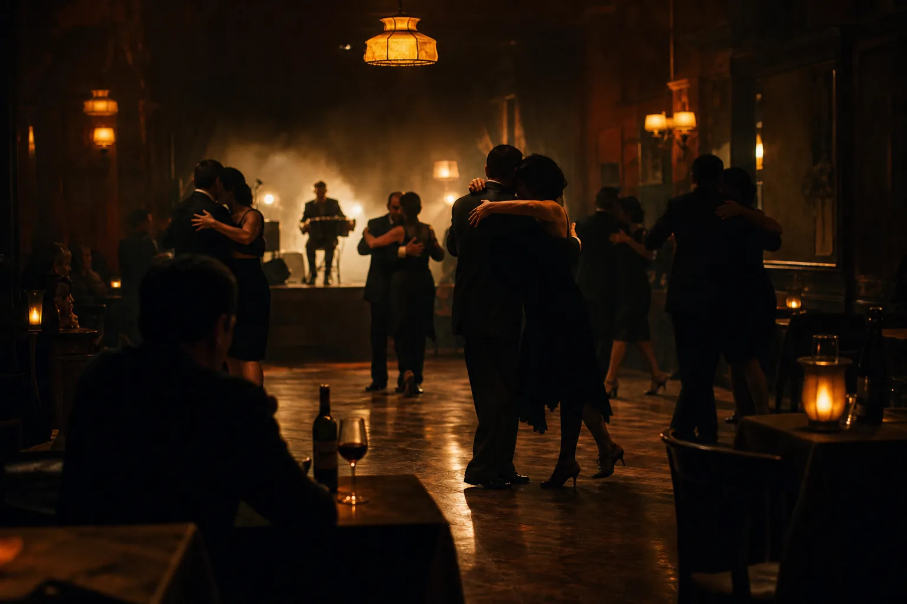
Con todo esto que charlamos, nos gustaría mostrarles nuestra propuesta. ---
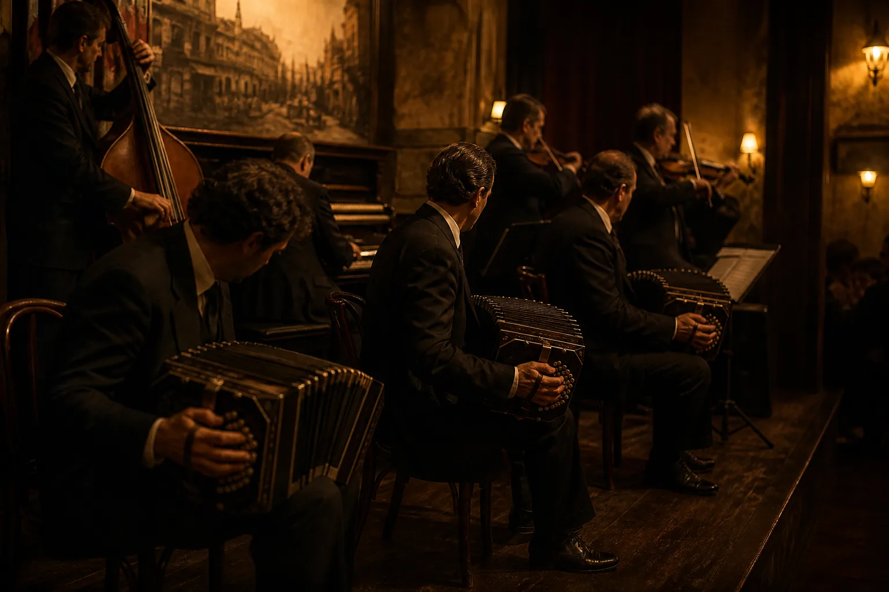
Cómo abrimos la puerta.
Reproducir el video. Hasta 3 minutos. No hablar por encima, salvo una frase de cierre al terminar.
Nuestra propuesta.
Colocá el archivo assets/video/proyecto_video_final.mp4 para reproducirlo acá.
Les presentamos BandoneAR, un bandoneón electrónico pensado para aprender y tocar sin las barreras que les venimos contando. Los cabezales izquierdo y derecho se fabrican con impresión 3D, y replican con exactitud la ergonomía, la distancia y la distribución física de los botones del instrumento tradicional. Para que el tacto sea idéntico al real, las teclas están impresas a medida y montadas sobre switches mecánicos lineales, así la respuesta es rápida y precisa. El instrumento incluye un fuelle inicial, pero cada uno tiene la libertad de encargarle a un luthier un fuelle artesanal hecho a medida. ---
Este es BandoneAR.
Mantiene la ergonomía, la distancia, la distribución y el tacto del instrumento real.
- Cabezales impresos en 3D
- Teclas a medida sobre switches mecánicos
- 71 botones: 38 derecha, 33 izquierda
- Fuelle inicial, ampliable a uno de luthier
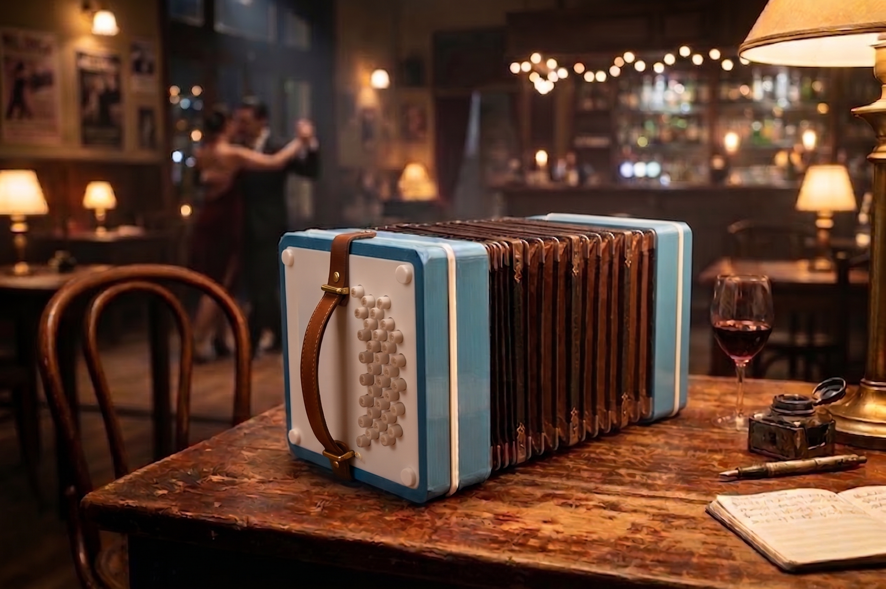
Acá se ve por dentro. Cada botón es un switch mecánico lineal montado sobre un cabezal impreso en 3D que respeta la distribución exacta del instrumento tradicional: la misma curva, la misma distancia entre botones, la misma altura. Elegimos switches lineales porque el recorrido es parejo, sin el escalón de un switch táctil, y es lo que más se parece a la pulsación de un bandoneón real. La idea es que la memoria muscular sea transferible: quien aprende en BandoneAR después se sienta frente a uno tradicional y la mano ya sabe dónde está cada nota. ---
Fiel al tacto del bandoneón.
Lo que aprendés acá se siente igual allá: la mano encuentra los botones donde los espera.
- Botonera en la distribución exacta del instrumento real
- Switches mecánicos lineales: recorrido parejo, sin escalón
- Teclas impresas a medida, misma distancia y altura
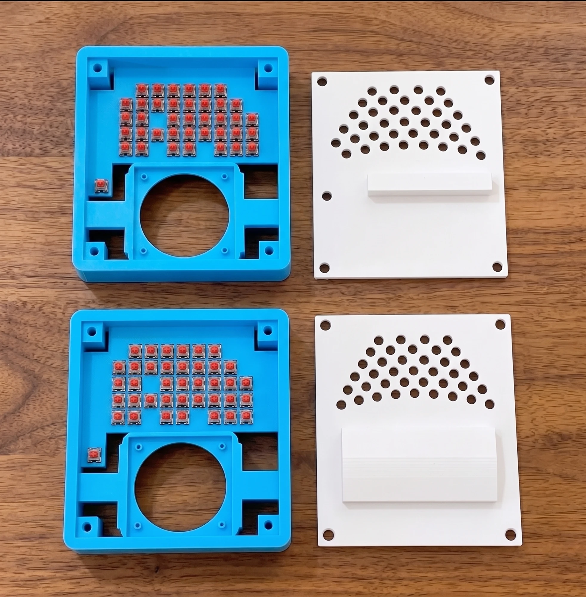
A diferencia de un instrumento tradicional, BandoneAR no depende de la presión del aire: la generación del sonido es cien por ciento digital. Acá el fuelle cumple un rol estético, ergonómico y postural. El corazón del sistema es un encoder rotativo interno que captura el movimiento físico de apertura y cierre. (gesto: mostrar el mecanismo abriéndose y cerrándose) Por software leemos en tiempo real la dirección, la velocidad y la aceleración del gesto, y lo traducimos en la intensidad, el volumen y la dinámica del sonido. Además reproduce fielmente el comportamiento bisonoro: el mismo botón genera una nota distinta al abrir y al cerrar. ---
Mismo gesto. Otro corazón.
El sonido es cien por ciento digital: no depende del aire.
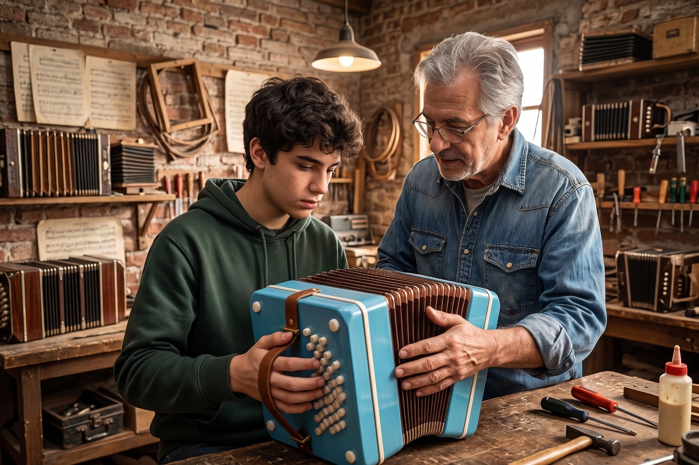
Tradicional
BandoneAR
Adentro de BandoneAR
- Un encoder capta la apertura y el cierre
- El software lee dirección, velocidad y aceleración
- Eso define intensidad, volumen y dinámica
- El fuelle controla el gesto y la postura
En cuanto a su versatilidad, ofrece dos modalidades. El modo autónomo funciona de forma totalmente independiente, con batería integrada, sintetizador y amplificador internos y altavoces estéreo dedicados, que reproducen los graves a la izquierda y los agudos a la derecha para respetar la espacialidad acústica original. También cuenta con salida auxiliar jack de 3,5 milímetros para auriculares o para amplificación externa. El modo controlador MIDI se conecta por USB a cualquier computadora, lo que permite integrarlo a programas de producción musical y tocar con librerías personalizadas. ---
Solo, o conectado a todo lo demás.
Modo autónomo
- Batería integrada
- Sintetizador y amplificador internos
- Parlantes estéreo: graves izquierda, agudos derecha
- Salida jack 3,5 mm
Modo controlador MIDI
- Se conecta por USB a cualquier computadora
- Se integra a programas de producción musical
- Toca con librerías personalizadas
El objetivo central de cada una de estas decisiones es garantizar una transferencia técnica directa y natural hacia el bandoneón tradicional. No queremos reemplazar al instrumento: queremos que quien empiece acá pueda seguir allá. ---
Accesible para empezar. Serio para aprender.
- Para quién es: quien soñó con tocarlo y se frenó por el precio, o por no saber por dónde empezar
- Pensado para facilitar el salto al bandoneón tradicional
- ≈ 25% del costo de un bandoneón tradicional
- No lo reemplaza: quien empieza acá puede seguir allá
Queremos democratizar el acceso a un pilar de nuestra identidad cultural: que aprender a tocar el bandoneón sea tan accesible y cotidiano como lo es hoy aprender flauta dulce en las escuelas.
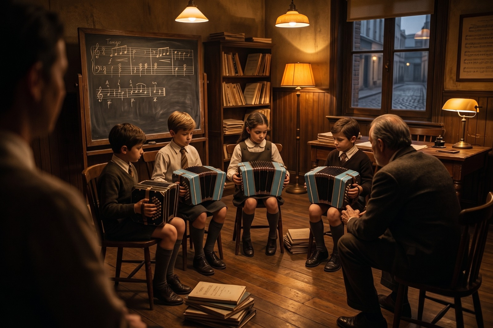
Tan cotidiano como la flauta dulce.
Muchas gracias por escucharnos. Quedamos abiertos a las preguntas que quieran hacernos. ---
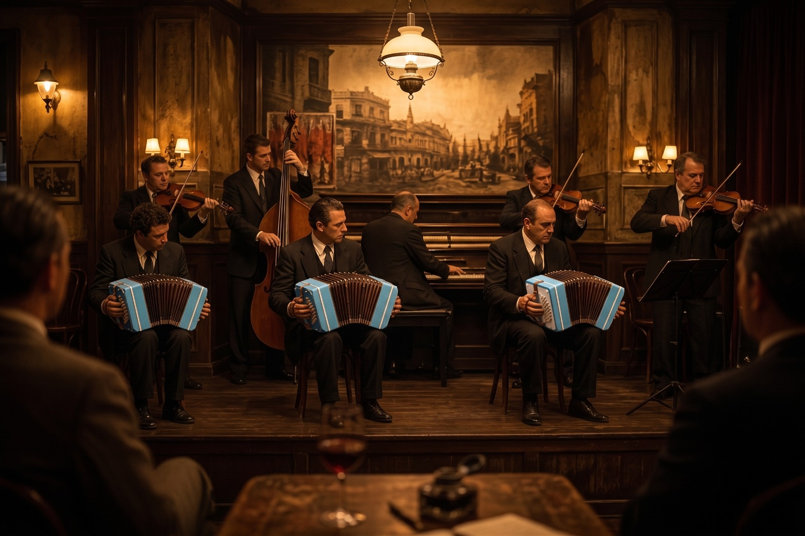
Gracias.
¿Preguntas?